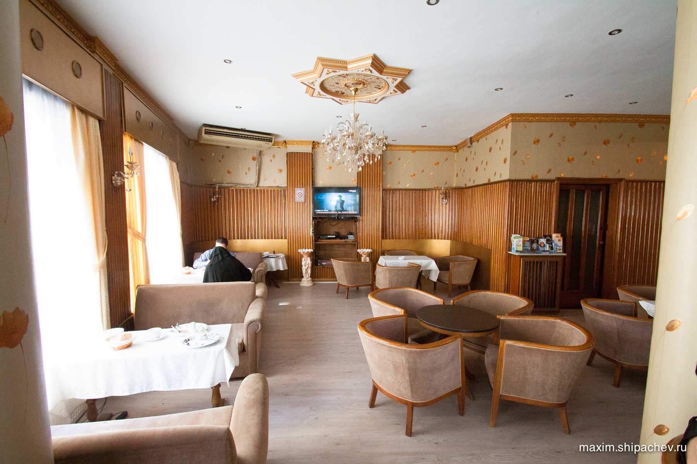
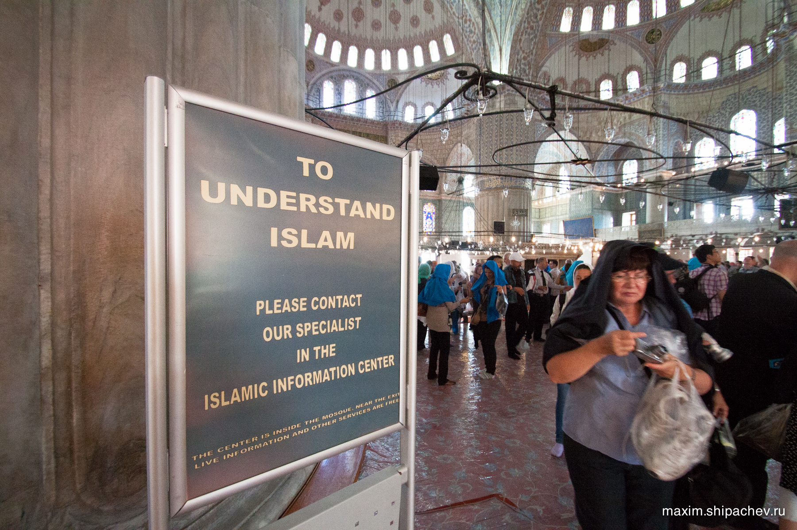
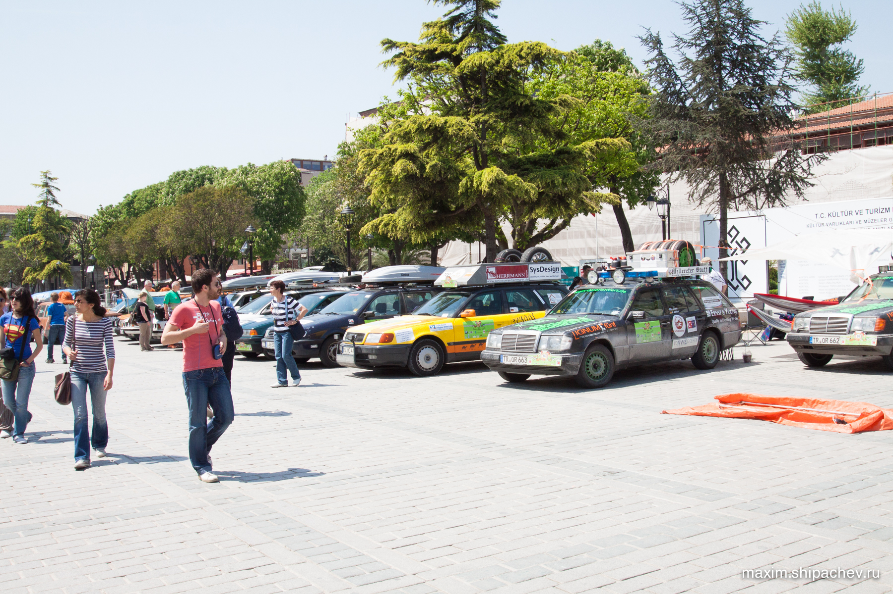
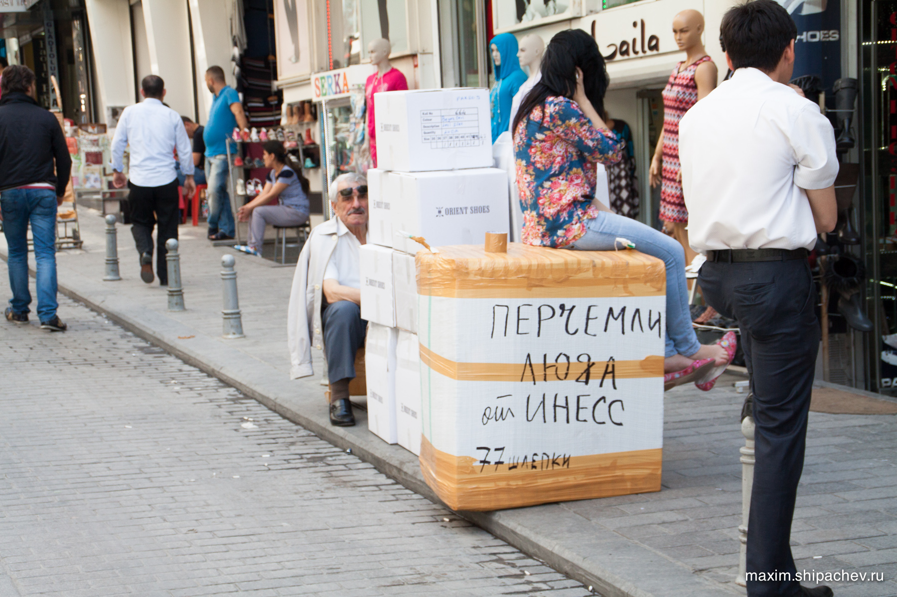
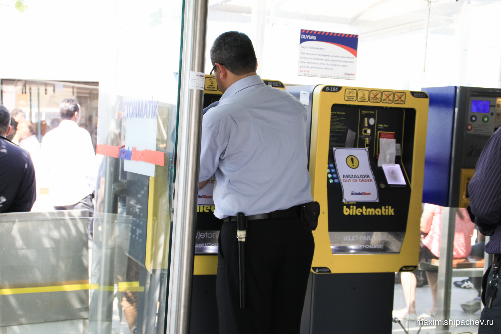

Наступил последний, 12-й день нашего пребывания в Стамбуле весной 2013 года. День грозил стать длинным, самолёт до Москвы улетал только ночью.
Из гостиницы нам нужно выписаться до 11 часов, поэтому собираем вещи в рюкзаки. Перспектива гулять весь день с грузом радует не очень, поэтому договариваюсь оставить рюкзаки до вечера на ресепшене.

На последний день мы оставили большинство достопримечательностей, которые оказались сосредоточенными вокруг нашей гостиницы.
Начинаем с самой популярной среди туристов — мечети Султанахмет.
Несмотря на то, что все туристы едут именно сюда, мечеть действующая и трижды в день закрывает свои двери для туристов, внутри остаются только паломники.
C колясками вход запрещён, а дочка заснула, поэтому успеваем «до молитвы» сходить в мечеть только мы с сыном.

Выходим на улицу, попадая на площадь Ипподром. Когда-то (1700 лет назад, за 800 лет до первого упоминания о Москве) здесь был настоящий ипподром, где проходили настоящие гонки на колесницах. Вместимость ипподрома была около 100 тысяч человек.
На площади остановились какие-то путешественники из Германии. Первое чувство, ну надо же, крутые какие, приехали на машинах аж из самой Германии. А потом мы прикинули, что от Берлина до Стамбула какие-то 2000 километров, а в прошлом году мы проехали 12500 по России, и, конечно, эти бюргеры с нами рядом даже не стояли.

Следующая достопримечательность на нашем пути — Цистерна Базилика. Название было на слуху, но мы её представляли как-то иначе. С улицы Цистерна выглядит совсем обыденно, небольшое здание. В её поисках мы ориентировались по очереди.
Покупаем билеты, спускаемся вниз по скользкой лестнице. Стоит того.
1,5 тысячи лет назад здесь хранился запас пресной воды для всего Константинополя на случай засухи или осады. До 16 века Цистерна эксплуатировалась, потом была заброшена. Как музейный объект восстановлена только в 1987 году.
Когда строили цистерну, колонны свозили из разных храмов, поэтому они отличаются сортом мрамора и способом обработки. Примечательно, что в основании двух колонн голова Медузы Горгоны, на одной она перевёрнута, на другой повёрнута набок. Это сделано для того, чтобы никто не смог посмотреть Медузе в глаза, потому что после этого человек окаменеет.
Раньше туристским развлечением было искать эти колонны, сейчас всё хуже — колонны обозначены указателями, и даже место вокруг них осушено.
Выходим наружу, идём на обед.
У нас в планах посещение не самой популярной достопримечательности у туристов, которая с другой стороны является излюбленным местом в Стамбуле для многих россиян. Такой вот ребус, но мы едем в район Лалели — место где покупают всё то, что скоро будут продавать на рынках «Колос» и в ЦУМе. К слову, это несколько трамвайных остановок от сердца Стамбула, Султанахмета.
Лалели — целый район в Стамбуле, нацеленный на русского барахольщика. Здесь русская речь слышна чаще турецкой, здесь грязь на улицах, а дружелюбие куда-то растворилось. Интересный опыт. Много русских продавцов-женщин, которые едут сюда работать на турков, может и ещё зачем. Увидев нас часто говорят что-то вроде «Девочки, кожу берём!».

Что будут носить большинство россиян, решают именно здесь. В этих вот многоуровневых бутиках, дворцах и подвалах.

Иду пешком метров 100 от остановки, чтобы обменять жетоны, возвращаемся к остальным туристам.
Направляемся в стоящий рядом с мечетью Султанахмет Софийский Собор.
У этого собора довольно интересная история. Он был построен в 532—537 годах и долгое время оставался самым большим христианским храмом. Султан Мехмед II, завоевавший Константинополь, обратил собор в мечеть Ая-Софья. К собору пристроили четыре минарета, а все христианские фрески замазали штукатуркой, благодаря чему большинство из них сохранилось до наших времён. Только в 1935 году, согласно декрету Ататюрка, Ая-Софья стала музеем, а с многих фресок и мозаик была счищена штукатурка.
В одной из колонн собора есть отверстие. В него нужно вставить большой палец и провернуть кисть на 360 градусом. Загаданное желание (например IPhone 5)
Выходим на улицу. Пора забирать вещи и выдвигаться в аэропорт.
Перед кондитерским магазином произошёл ещё один забавный случай. Жена катила коляску впереди, а я шёл сзади. У магазина был высокий порог и мужчина из пары подошедшей к магазину вместе с нами на автомате подхватил коляску. Тут его женщина, кажется она не подумала, что мы тоже русские, говорит ему «Тебе чо, больше всех надо, вон сзади отец идёт». Смешно, не правда ли?
По обычаю воспользуемся для поездки в аэропорт общественным транспортом.
В аэропорте сотрудник, увидев нашу дочку, проводит нас на стойку регистрации бизнес-класса.
Летим до Москвы, там жена (ночью) заходит в туалет в закрытой зоне, куртку забывает, через 15 минут её уже нет. Летим до Новосибирска, садимся как-то нерадостно, сквозь ветер, гром и дождь, в Новосибирске прямо на выходе из аэропорта нас встречает ссущий на забор гражданин.
Идём на стоянку, оплачиваем 13 суток стоянки (3250 рублей). Садимся в машину. Такой долгий перерыв в вождении у меня впервые в жизни. Справляюсь с волнением. Заезжаем в «Мегу», покупаем новую куртку, едем домой.